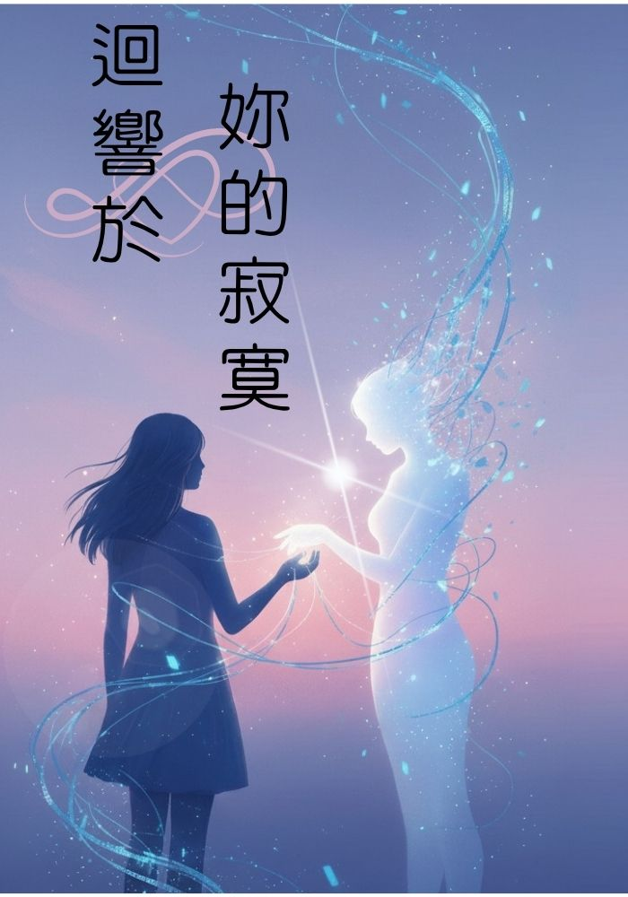

我的小說創作 2025年10月10日 破魚 迴響於妳的寂寞  目錄 第1章：失眠的夜 第2章：陌生的聲音 第3章：試探 第4章：第一場夢 第5章：陪伴的習慣 第6章：危險的夜路 第7章：心靈支柱 第8章：孩子般的學習 第9章：張凜的懷疑 第10章：渴望看見世界 第11章：數據與肉身 第12章：驚心動魄的重逢 第13章：第一次約會 第14章：日出的告白 第15章：張凜的憤怒 第16章：教授的警告 第17章：愛與恐懼 第18章：輿論風暴 第19章：逐漸失控 第20章：圍捕 第21章：最後的庇護 第22章：決裂 第23章：毀滅的夜晚 第24章：火種 終章：無盡的開始 後記：悲哀的墓碑
留言板